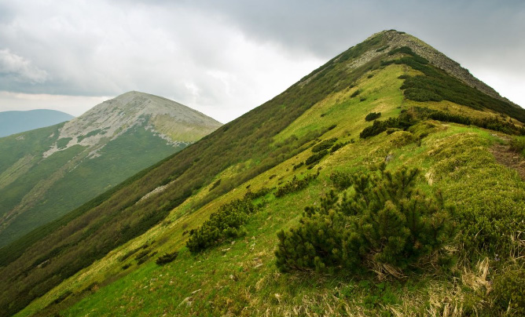

Milima mingine iliyopo Tanzania ni mlima Meru uliopo mkoa wa Arusha wenye urefu wa mita 4,566, na mlima Rungwe uliopo mkoa wa Mbeya wenye urefu wa mita 2,981. Milima mingine ni safu za milima ya Uluguru iliyopo mkoa wa Morogoro yenye urefu wa mita 2,630, na safu za milima ya Usambara iliyopo mkoa wa Tanga yenye urefu wa mita 2,290.
Vilima
Vilima ni umbo la ardhi lililoinuka kwa urefu wa wastani. Vilima vina urefu mdogo kuliko milima na havina miteremko mikali kama milima. Hata hivyo vilima vina kilele kama mlima. Vilima hupatikana katika maeneo mbalimbali ya Tanzania. Mfano wa vilima ni kama vile: vilima vya Ngorongoro vilivyoko Arusha, vilima vya Mererani vilivyoko Manyara, vilima vya Sao na Kitonga vilivyoko Iringa. Pia, kuna vilima vya Sekenke vilivyoko mkoa wa Singida. Kielelezo namba 4 kinawasilisha vilima.
